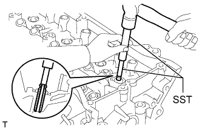

ГОЛОВКА БЛОКА ЦИЛИНДРОВ > ЗАМЕНА |
| 1. ЗАМЕНИТЕ НАПРАВЛЯЮЩУЮ ВТУЛКУ ВПУСКНОГО КЛАПАНА |
Нагрейте головку блока цилиндров до температуры 80 – 100°C (176 – 212°F).
Поместите головку блока цилиндров на деревянные бруски.
С помощью специального инструмента и молотка выбейте направляющие втулки впускного клапана.
С помощью индикатора часового типа для отверстий измерьте в головке блока цилиндров диаметр отверстия под направляющую втулку впускного клапана.
| Параметр / Устройство | Заданные условия |
| Номинальное значение | 10,285 - 10,306 мм (0,4049 - 0,4057 дюйма) |
| Ремонтный 0,05 | 10,335 - 10,356 мм (0,4069 - 0,4077 дюйма) |
Выберите новую направляющую втулку клапана.
| Параметр / Устройство | Заданные условия | |
| Диаметр гнезда втулки | 10,285 - 10,306 мм (0,4049 - 0,4057 дюйма) | 10,335 - 10,356 мм (0,4069 - 0,4077 дюйма) |
| Используемая втулка | Номинальное значение | Ремонтный 0,05 |
| Параметр / Устройство | Заданные условия |
| Номинальное значение | 10,333 - 10,344 мм (0,4068 - 0,4072 дюйма) |
| Ремонтный 0,05 | 10,383 - 10,394 мм (0,4088 - 0,4092 дюйма) |
Нагрейте головку блока цилиндров до температуры 80 – 100°C (176 – 212°F).
Поместите головку блока цилиндров на деревянные бруски.
С помощью SST запрессуйте направляющие втулки впускных клапанов до заданной высоты выступания.
| *1 | Высота выступания |
Острой разверткой на 5,5 мм разверните отверстия в направляющих втулках клапанов, чтобы обеспечить номинальный зазор.
| 2. ЗАМЕНИТЕ НАПРАВЛЯЮЩУЮ ВТУЛКУ ВЫПУСКНОГО КЛАПАНА |
Нагрейте головку блока цилиндров до температуры 80 – 100°C (176 – 212°F).
Поместите головку блока цилиндров на деревянные бруски.
|  |
С помощью специального инструмента и молотка выбейте направляющие втулки выпускного клапана.
С помощью индикатора часового типа для отверстий измерьте в головке блока цилиндров диаметр отверстия под направляющую втулку выпускного клапана.
| Параметр / Устройство | Заданные условия |
| Номинальное значение | 10,285 - 10,306 мм (0,4049 - 0,4057 дюйма) |
| Ремонтный 0,05 | 10,335 - 10,356 мм (0,4069 - 0,4077 дюйма) |
Выберите новую направляющую втулку клапана.
| Параметр / Устройство | Заданные условия | |
| Диаметр гнезда втулки | 10,285 - 10,306 мм (0,4049 - 0,4057 дюйма) | 10,335 - 10,356 мм (0,4069 - 0,4077 дюйма) |
| Используемая втулка | Номинальное значение | Ремонтный 0,05 |
| Параметр / Устройство | Заданные условия |
| Номинальное значение | 10,333 - 10,344 мм (0,4068 - 0,4072 дюйма) |
| Ремонтный 0,05 | 10,383 - 10,394 мм (0,4088 - 0,4092 дюйма) |
Нагрейте головку блока цилиндров до температуры 80 – 100°C (176 – 212°F).
Поместите головку блока цилиндров на деревянные бруски.
С помощью SST запрессуйте направляющие втулки выпускных клапанов до заданной высоты выступания.
| *1 | Высота выступания |
 |
Острой разверткой на 5,5 мм разверните отверстия в направляющих втулках клапанов, чтобы обеспечить номинальный зазор.
| 3. ЗАМЕНИТЕ ШТУЦЕР |
Снимите штуцер с головки блока цилиндров ряда 1 (с передней стороны) и головки блока цилиндров ряда 2 (со стороны впускных каналов).
| *A | Справа с передней стороны | *B | Слева со стороны впуска |
Нанесите герметик на 2-3 витка резьбы концов болтов новых штуцеров.
С помощью удлиненной торцевой головки на 12 мм закрепите 2 штуцера.
| 4. ЗАМЕНИТЕ ПРОБКУ |
Снимите пробки.
Нанесите на новые пробки герметик.
С помощью SST и молотка вбейте пробки на номинальную глубину.
| *A | Правая сторона | *B | Левая сторона |
| *1 | Номинальная глубина | - | - |
| 5. ЗАМЕНИТЕ СТОПОРНЫЙ ШТИФТ |
С помощью молотка с пластмассовым покрытием вбейте новые стопорные штифты, как показано на рисунке.
| *A | Правая сторона | *B | Левая сторона |
| *1 | Высота выступания | - | - |
| 6. ЗАМЕНИТЕ СОЕДИНИТЕЛЬНОЕ КОЛЬЦО |
Пластмассовым молотком запрессуйте новые соединительные кольца до номинальной высоты выступания.
| *A | Правая сторона |
| *B | Левая сторона |
| *1 | Высота выступания |
| 7. ЗАМЕНИТЕ ТРУБКУ СВЕЧНОГО КОЛОДЦА |
Снимите трубку свечного колодца.
| *1 | Герметик-фиксатор |
| *2 | Расстояние |
Нанесите герметик на конец новой трубки свечного колодца.
С помощью деревянного бруска и молотка вбейте трубку свечного колодца до достижения заданной высоты выступания.
| *1 | Верхняя поверхность головки блока цилиндров: |
| *2 | Высота выступания |